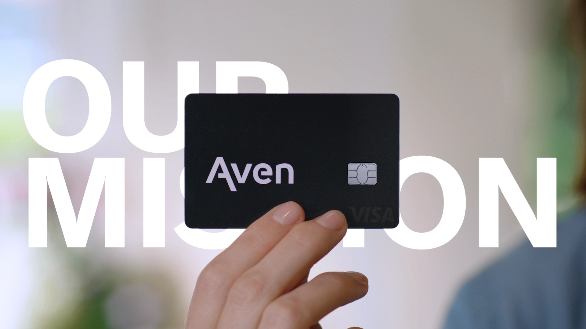
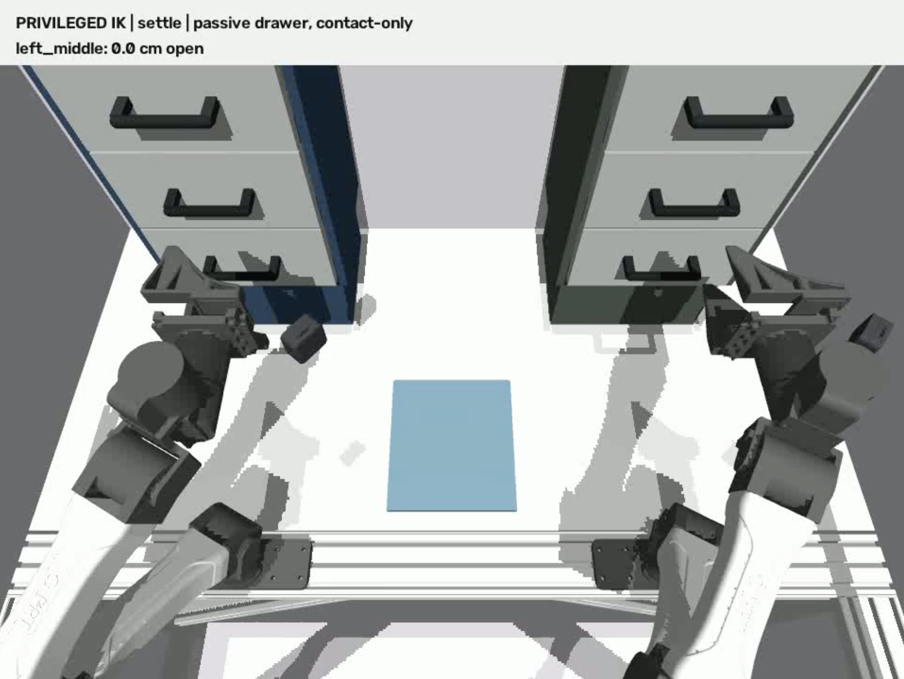
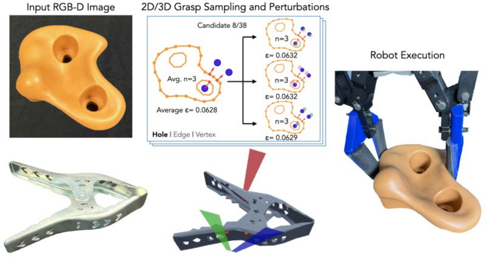
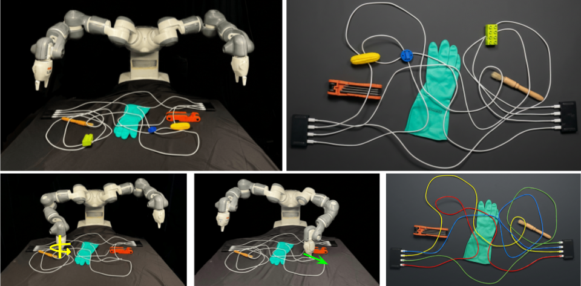
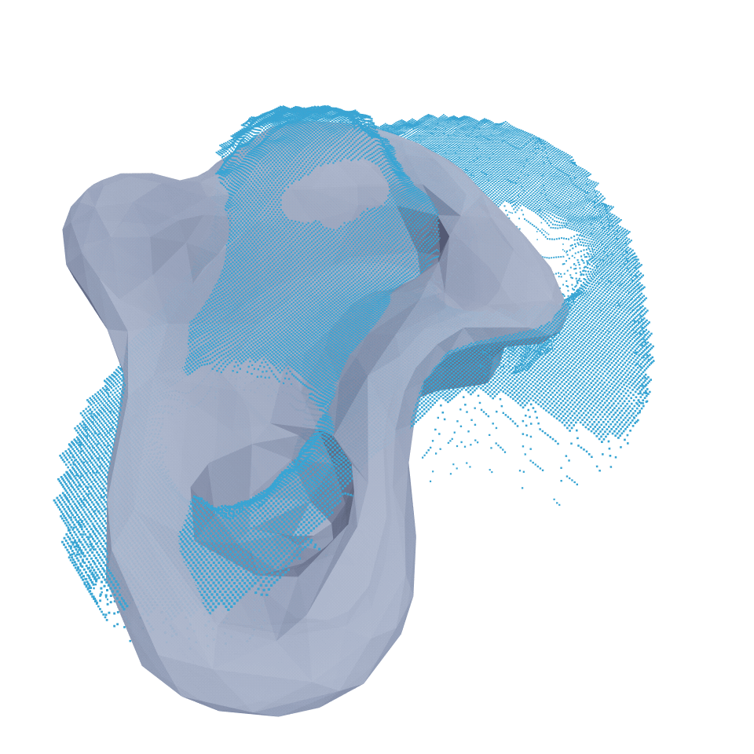
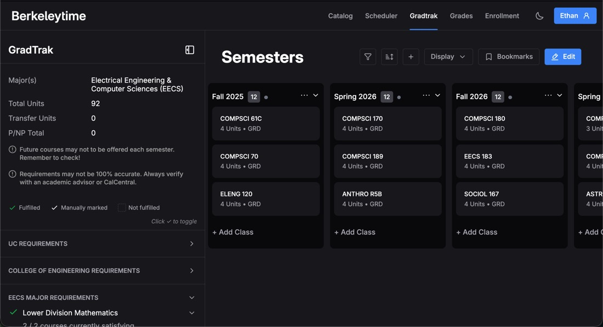
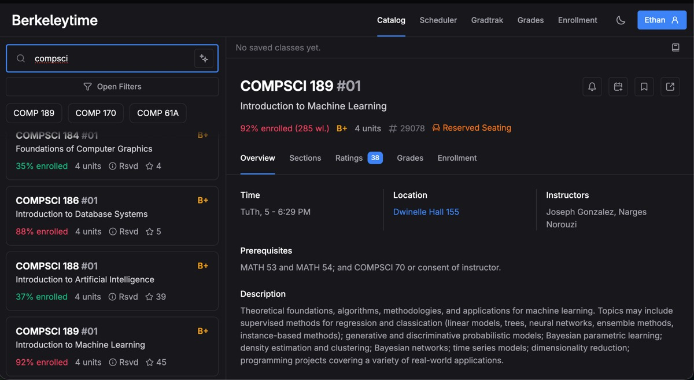
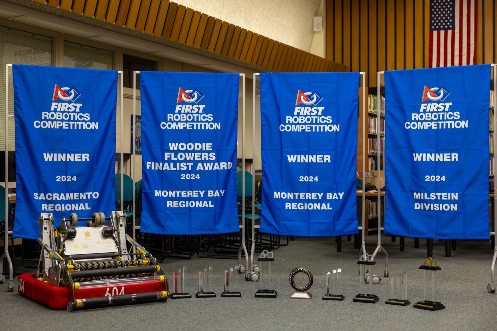

Ethan Ransing
I'm Ethan, a third-year undergraduate studying Electrical Engineering and Computer Science at UC Berkeley. I'm excited about robotics, financial infrastructure, and agentic systems.
At the AUTOLab (part of the Berkeley Artificial Intelligence Research cluster), advised by Prof. Ken Goldberg, I work on robot manipulation and RL environments for robot learning. I'm traveling to Pittsburgh to present our work on robotic cable tracing at IROS 2026 — come say hi!
Experience






